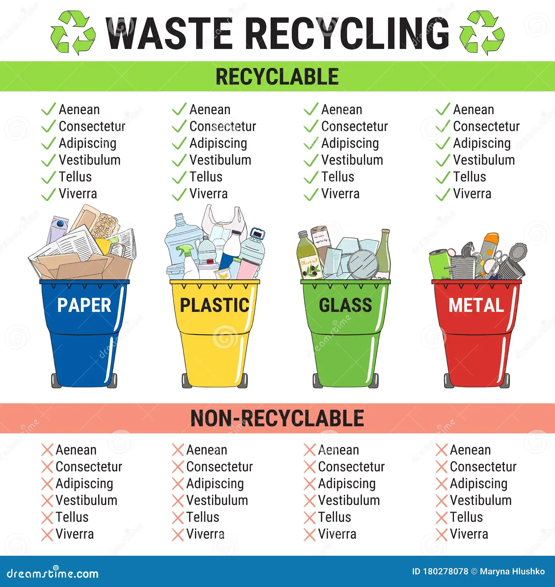

Bienvenido a la plataforma de Gestión de Residuos
Facilitamos el reciclaje, la educación ambiental y la recolección personalizada para proteger nuestro planeta.
Con nuestra plataforma, podrás:
- ♻️ Acceder a programas de reciclaje adaptados a tu comunidad.
- 📚 Recibir información sobre cómo reducir tu huella de carbono.
- 🌍 Participar en campañas y eventos ecológicos.
- 🏭 Conectar con empresas que optimizan la gestión de residuos.
La Importancia de la Gestión de Residuos
La gestión adecuada de residuos es fundamental para proteger el medio ambiente y garantizar la sostenibilidad de nuestros recursos naturales. La creciente producción de desechos, combinada con un manejo inadecuado, puede generar graves consecuencias, como la contaminación del aire, del agua y del suelo, así como el agotamiento de los vertederos.
El reciclaje reduce la contaminación y el consumo de recursos.
La mala gestión de residuos puede provocar contaminación del agua y el aire.
Implementar sistemas de recolección adecuados mejora la sostenibilidad ambiental.
¿Por qué es importante gestionar los residuos?
Campañas Activas
Recicla Hoy - Ayuda a reducir la contaminación participando en nuestra campaña de reciclaje.
Más informaciónMenos Plástico, Más Vida - Únete a la iniciativa para reducir el uso de plásticos.
Únete ahoraLo que dicen nuestros participantes
"Gracias a esta plataforma, he aprendido a reducir mis residuos y a reciclar de manera efectiva."
- Juan Pérez
"Una excelente iniciativa para cuidar nuestro planeta. ¡Súmate al cambio!"
- Ana Gómez
¿Cómo funciona la gestión de residuos?
¿Quieres ser parte del cambio?
Únete a nuestras campañas y ayúdanos a mejorar el medio ambiente.
Participar